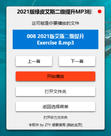
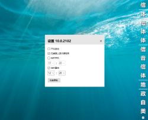
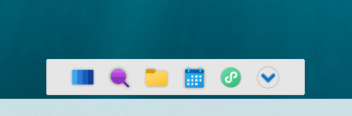

ZTY Build
本站软件开发者是ZTY，仅供学习，切勿用于商业用途；
意见反馈QQ：112 5866 121，感谢您的使用和您提出的宝贵意见。
LsnHpr（听力播放助手） 最近更新于2021/2/22 下载

你在播放听力前，总要在文件多、文件名长的文件夹里为寻找今天的听力文件而折腾一番，LsnHpr能自动显示今天要播放的文件，省去寻找文件的麻烦。
运行环境：Windows 10（如有其他版本需要，请联系页底作者QQ）
电教辅助 版本10.0 最近更新于2021/2/24 下载

本软件内含课程即点即换的桌面课程表，还有自动关机重启功能，实现教室电脑的自动管理。
运行环境：Windows Vista/7/8/8.1/10（如有其他版本需要，请联系页底作者QQ )
Dock（导航条） 最近更新于2021/2/7 下载

使用此导航条能让你在任何界面下快速搜索、打开学科文件夹、查看课程表、打开常用的程序，建议用于触控一体机。
运行环境：Windows Vista/7/8/8.1/10（如有其他版本需要，请联系页底作者QQ )
本站最近更新于2021/2/26，有疑问请联系作者QQ：1125866121。